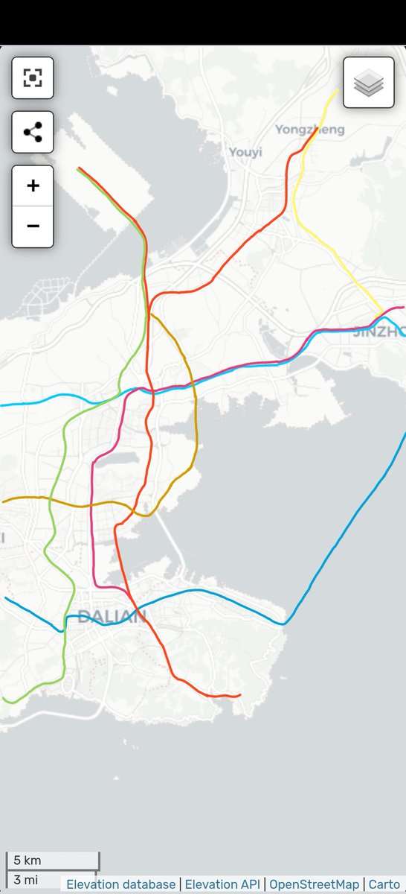

Luka Megurine 03（互fo
@LMegurine03
之前想过一个设计，就差不多是这样的，3号线不用动，2号线直接出地面和3号线共线到开发区然后跨海连到东港，直接搞一个70公里的环线，13号线二期改成5号线的支线在后关换乘，4号线跨海到福佳新城换2和3，然后再把甩掉的几站连上也接到后关，不过我觉得也太离谱了，没什么实际操作性（

s2R2304
@57crz3oA
@LMegurine03 规划的有问题，我觉得3应该去大连北然后往西去甘井子西山水库，3支拆解给13而不是等二三十年后再让13去大连北